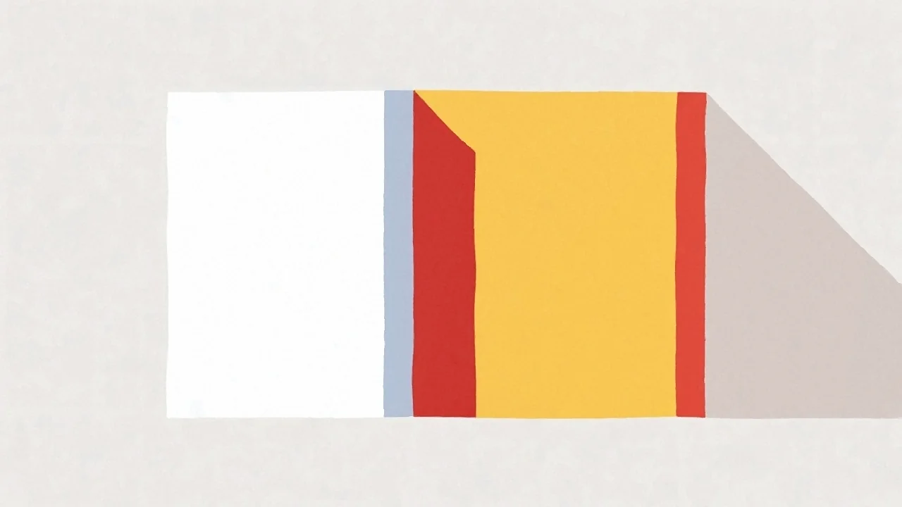

To najczęstsze pytanie, jakie słyszymy przed rozpoczęciem prac. Oba materiały są sprawdzone i skuteczne – różnią się jednak ceną, ciężarem, paroprzepuszczalnością i odpornością na ogień. Oto uczciwe porównanie, które pomoże Ci wybrać.
Styropian vs wełna mineralna – porównanie
| Cecha | Styropian (EPS) | Wełna mineralna |
|---|---|---|
| Cena | Niższa | Wyższa (o 15–30%) |
| Izolacyjność (λ) | 0,031–0,040 W/mK | 0,033–0,039 W/mK |
| Odporność ogniowa | Samogasnący | Niepalna (klasa A1) |
| Akustyka | Słaba | Bardzo dobra |
| Paroprzepuszczalność | Niska | Wysoka („oddycha") |
| Odporność na wilgoć | Wysoka | Wymaga ochrony |
| Montaż | Łatwy, lekki | Cięższy, wymaga wprawy |
Kiedy wybrać styropian
Ocieplenie styropianem metodą BSO to najpopularniejsze rozwiązanie dla domów jednorodzinnych – i w większości przypadków w pełni wystarczające. Sprawdza się, gdy:
- zależy Ci na najlepszym stosunku ceny do efektu,
- ocieplasz typowy dom murowany z pełnej cegły, pustaka czy betonu komórkowego,
- chcesz szybki montaż i materiał odporny na zawilgocenie.
Warto rozważyć styropian grafitowy – ma lepszą izolacyjność niż biały, więc pozwala uzyskać ten sam efekt przy cieńszej warstwie.
Kiedy wybrać wełnę mineralną
Wełna mineralna kosztuje więcej, ale w niektórych sytuacjach jest po prostu lepszym wyborem:
- przy domach drewnianych i szkieletowych – jest paroprzepuszczalna i niepalna,
- gdy liczy się cisza – przy ruchliwej ulicy wyraźnie tłumi hałas,
- gdy ważne jest bezpieczeństwo pożarowe (klasa A1),
- na ścianach, które muszą „oddychać", by uniknąć zawilgocenia.
Który wybrać – podsumowanie
Dla większości domów jednorodzinnych w Warszawie i okolicach styropian jest rozsądnym wyborem – tańszy, sprawdzony i skuteczny. Wełnę mineralną wybieraj tam, gdzie liczy się akustyka, odporność ogniowa lub paroprzepuszczalność ścian. Jeśli nie masz pewności – zadzwoń, obejrzymy budynek i podpowiemy bez naciągania na droższe rozwiązanie.
Nie wiesz, co wybrać dla swojego domu?
Przyjedziemy, ocenimy budynek i doradzimy właściwą metodę – wycena jest bezpłatna.
Zamów bezpłatną wycenę →